湖南省2026年普通高中学业水平选择性考试 化学
可能用到的相对原子质量：H 1 Li 7 C 12 N 14 O 16 Cr 52 Ag 108
一、选择题：本题共14小题，每小题3分，共42分。在每小题给出的四个选项中，只有一项是符合题目要求的。
相关题目：第 1 题 · 第 2 题 · 第 3 题 · 第 4 题 · 第 5 题 · 第 6 题 · 第 7 题 · 第 8 题 · 第 9 题 · 第 10 题 · 第 11 题 · 第 12 题 · 第 13 题 · 第 14 题
返回原卷说明与一、选择题
题目与已知条件
中国油纸伞已有千年历史，其制作过程包括碱法制浆(纸浆)、柿漆(含单宁酸，属于多酚类物质)粘结、朱砂(HgS)附着和桐油防水等工艺，下列说法错误的是
所用高中知识
化学变化的判断；氢键；无机颜料；油脂的疏水性。
读题与思路
碱法制浆要用碱溶解、降解木质素等，生成了新物质。
分步解析
- 碱法制浆用NaOH等蒸煮原料，木质素、半纤维素发生水解、降解等反应，涉及化学变化，A错误。
- 单宁酸含大量酚羟基，可形成分子间氢键，B正确。
- HgS是无机物，朱砂是传统无机颜料，C正确。
- 桐油属于油脂，难溶于水，具有疏水性，D正确。
检查与易错点
“制浆”不是单纯的物理粉碎，碱法蒸煮中发生了化学反应。
本题来源：doc-hunan-q
返回原卷说明与一、选择题
题目与已知条件
下列图示中，实验操作或方法正确的是
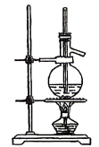 |
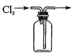 |
| C．除去Na₂CO₃固体中的NaHCO₃ |
D．配制一定物质的量浓度的溶液 |
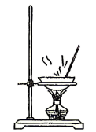 |
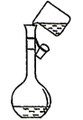 |
所用高中知识
乙烯的实验室制法；排空气法收集气体；固体加热仪器；容量瓶转移溶液。
分步解析
- 乙醇与浓硫酸共热至170 ℃制乙烯，温度计水银球插入反应液中，加碎瓷片、垫陶土网加热，A正确。
- Cl₂密度比空气大，用向上排空气法时应长管进、短管出；图中Cl₂从短管进入，B错误。
- 加热固体应在坩埚或试管中进行，蒸发皿用于蒸发溶液，C错误。
- 向容量瓶转移溶液必须用玻璃棒引流，图中直接倾倒，D错误。
检查与易错点
制乙烯的温度计测的是反应液温度，必须插入液面以下。
本题来源：doc-hunan-q
返回原卷说明与一、选择题
题目与已知条件
化学知识在生产、生活中应用广泛。下列反应方程式错误的是
A.氢氟酸溶蚀玻璃生产磨砂玻璃：4HF + SiO₂ ══ SiF₄↑ + 2H₂O
B.侯氏制碱法的主要反应：NH₃ + NaCl + CO₂ + H₂O ══ NH₄Cl + NaHCO₃↓
C.酸性高锰酸钾溶液测定空气中的SO₂含量：5SO₂ + 2MnO₄⁻ + 2H₂O ══ 5SO₄²⁻ + 2Mn²⁺ + 4H⁺
D.醋酸除去水垢中的CaCO₃：2H⁺ + CaCO₃ ══ Ca²⁺ + CO₂↑ + H₂O
分步解析
- A、B均为课本反应，书写正确。
- C：S由+4升至+6失2e⁻×5，Mn由+7降至+2得5e⁻×2，电荷、原子均守恒，正确。
- D：醋酸为弱酸，应写化学式：2CH₃COOH + CaCO₃ ══ Ca²⁺ + 2CH₃COO⁻ + CO₂↑ + H₂O，D错误。
检查与易错点
醋酸是弱电解质，离子方程式中不能拆成H⁺。
本题来源：doc-hunan-q
返回原卷说明与一、选择题
题目与已知条件
消毒剂三氯异氰尿酸(
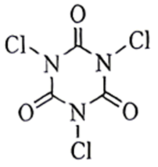
)能与H₂O持续缓慢反应产生HClO。下列相关化学用语表述正确的是所用高中知识
分子式、电子式、价层电子排布、空间填充模型。
分步解析
- 结构中含3个C、3个N、3个O、3个Cl，分子式为C₃Cl₃N₃O₃，A漏写C，错误。
- HClO中O为中心原子，电子式为H:O:Cl（O、Cl各补齐孤电子对），图中写成H—Cl—O的顺序，B错误。
- Cl为17号元素，价层电子排布式3s²3p⁵，C正确。
- H₂O为V形，空间填充模型应是一个大球（O）连两个小球（H）；图示为两个等大的球，D错误。
检查与易错点
HClO的结构是H—O—Cl，不能按化学式顺序写电子式。
本题来源：doc-hunan-q
返回原卷说明与一、选择题
题目与已知条件
对下列性质解释正确的是
| A |
酸性：HCl>HF |
非金属性：F>Cl |
| B |
沸点：H₂O>HF |
氢键键能：HF>H₂O |
| C |
沸点：正戊烷>新戊烷 |
分子间作用力：正戊烷>新戊烷 |
| D |
硬度：金刚石>石墨 |
碳碳键的键能：石墨>金刚石 |
所用高中知识
氢卤酸酸性、氢键、同分异构体沸点、晶体硬度。
分步解析
- HCl酸性强于HF是因为H—F键能大、难电离，与“非金属性F>Cl”无因果关系（按非金属性反而推不出该结论），A错误。
- H₂O沸点高于HF是因为每个H₂O形成的氢键数目更多；单个氢键键能HF更大，不能解释H₂O沸点更高，B错误。
- 正戊烷为直链，分子间接触面积大，范德华力大，沸点高于新戊烷，C正确。
- 石墨层内C—C键能确实较大，但石墨层间为较弱的作用力，硬度小；“键能石墨>金刚石”不能解释金刚石更硬，D错误。
检查与易错点
判断此类题要看因果关系是否成立，而不只看两句话分别是否正确。
本题来源：doc-hunan-q
返回原卷说明与一、选择题
题目与已知条件
W、X、Y、Z、M为原子序数依次增大的短周期主族元素，W与X位于不同周期，X在同周期基态原子中未成对电子数最多，Y与Z同族。下列说法错误的是
所用高中知识
元素推断；第一电离能的反常；VSEPR模型。
分步解析
- W₂Y、W₂Z形式且Y、Z同族，结合W与X不同周期，W为H；X为第二周期未成对电子最多的N；Y为O，Z为S，M为Cl。
- A：N的2p半充满，第一电离能N>O，A错误。
- B：非金属性O>S，H₂O比H₂S稳定，B正确。
- C：SO₂、ClO₂中心原子均有孤电子对（ClO₂含单电子），均为V形，C正确。
- D：3NO₂ + H₂O ══ 2HNO₃ + NO为氧化还原反应，SO₂ + H₂O ⇌ H₂SO₃为化合（非氧化还原）反应，类型不同，D正确。
检查与易错点
N的第一电离能大于O，是第二周期的常见反常点。
本题来源：doc-hunan-q
返回原卷说明与一、选择题
题目与已知条件
一种可用于心脏起搏器的扣式电池部分截面结构如图所示(LiClO₄-有机溶剂作电解质溶液，Ag₂CrO₄难溶于该溶剂)。下列说法错误的是
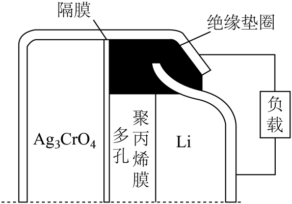
原题图A.往Ag₂CrO₄电极材料中添加石墨，可增强其导电性
D.每消耗负极材料2.1 g，理论上外电路中通过了0.3 mol e⁻
读题与思路
Li为负极，难溶的Ag₂CrO₄在正极整体得电子。
分步解析
- Ag₂CrO₄导电性差，加石墨可增强导电性，A正确。
- Ag₂CrO₄难溶于电解质溶剂，溶液中无大量Ag⁺，正极反应为 Ag₂CrO₄ + 2Li⁺ + 2e⁻ ══ 2Ag + Li₂CrO₄，B错误。
- 原电池中阳离子移向正极，C正确。
- 负极 Li − e⁻ ══ Li⁺，2.1 g Li为0.3 mol，转移0.3 mol e⁻，D正确。
检查与易错点
难溶电极材料不能拆写成离子参加电极反应。
本题来源：doc-hunan-q
返回原卷说明与一、选择题
题目与已知条件
乙炔是重要的化工原料。一条由乙炔合成某氨基酸的路线如下：
下列说法错误的是
所用高中知识
乙炔水化；分子极性；胺的碱性；α-氨基酸的定义。
分步解析
- 乙炔在催化剂作用下与水加成生成乙醛，A正确。
- 丙烯腈结构不对称，—CN极性强，是极性分子，B正确。
- —NH₂有孤电子对，显碱性，可与盐酸成盐，C正确。
- H₂NCH₂CH₂COOH中氨基连在羧基的β位碳上，为β-氨基酸（β-丙氨酸），D错误。
检查与易错点
α-氨基酸要求氨基与羧基连在同一个碳原子上。
本题来源：doc-hunan-q
返回原卷说明与一、选择题
题目与已知条件
下列实验操作对应的现象(或结果)及所推出的结论均正确的是
| A |
向5 mL碘水中加入1 mL CCl₄，振荡，然后加入1 mL浓KI溶液，振荡试管 |
有机层紫色变浅 |
I₂在水中的溶解度大于其在CCl₄中的溶解度 |
| B |
将1 mL pH均为3的HA和HB溶液，分别加水稀释至100 mL，测pH |
pH：HA>HB |
HA为强酸，HB为弱酸 |
| C |
向浓度均为0.1 mol·L⁻¹的NaCl和NaI混合溶液中滴加稀AgNO₃溶液 |
先产生黄色沉淀 |
|
| D |
加热葡萄糖和新制氢氧化铜的混合液 |
产生砖红色沉淀 |
Cu(OH)₂被还原成Cu |
所用高中知识
I₃⁻的形成；弱酸稀释；沉淀先后与Ksp；醛基检验。
分步解析
- A：I₂ + I⁻ ⇌ I₃⁻，I₂转入水层，有机层变浅，不能说明I₂在水中溶解度更大，A错误。
- B：稀释100倍后HA的pH更大，只说明HA酸性比HB强；HA的pH未必等于5，不能断定HA为强酸，B错误。
- C：AgI与AgCl同类型，等浓度下先析出黄色AgI，说明 ，C正确。
- D：砖红色沉淀是Cu₂O，Cu(OH)₂被还原为Cu₂O而非Cu，D错误。
检查与易错点
比较Ksp必须是同类型沉淀，且起始离子浓度相等。
本题来源：doc-hunan-q
返回原卷说明与一、选择题
题目与已知条件
实验室用苯和苯甲酰氯在AlCl₃催化下制备二苯甲酮的简易装置如图所示。
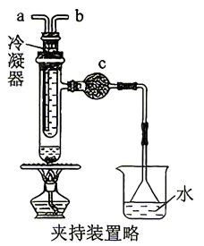
原题图
已知：①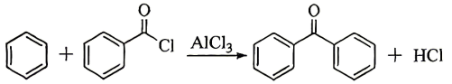
反应①
②苯甲酰氯易水解。
下列说法错误的是
所用高中知识
冷凝水“下进上出”；防水解的干燥装置；防倒吸；平衡移动。
分步解析
- 冷凝器冷却水应从位置较低的接口进入、较高的接口流出，使夹套充满冷却水；图中a接入内管通到下部，应为进水口，b为出水口，A错误。
- 苯甲酰氯易水解、AlCl₃遇水也会水解，c处干燥管装无水CaCl₂可阻止烧杯中水蒸气进入，B正确。
- 漏斗倒扣在水面上，本身可防倒吸；先停止加热、待装置中仍有气体排出时再移出漏斗，操作合理，C正确。
- HCl是产物，不断逸出使平衡正向移动，D正确。
检查与易错点
冷凝水应“下进上出”，不可从上端进水。
本题来源：doc-hunan-q
返回原卷说明与一、选择题
题目与已知条件
常温下，铜铁混合物(粉末状)能发生如图所示的转化关系。下列说法错误的是
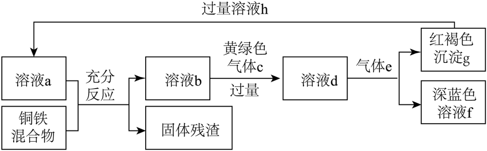
原题图所用高中知识
Fe、Cu的性质；Cl₂氧化Fe²⁺；氨水与Fe³⁺、Cu²⁺。
读题与思路
黄绿色气体c为Cl₂，气体e为NH₃，红褐色沉淀g为Fe(OH)₃，深蓝色溶液f含[Cu(NH₃)₄]²⁺。
分步解析
- 溶液a过量，铜铁混合物中还原性更强的Fe优先、完全反应；只有Cu可能剩余（若a为盐酸，Cu不反应；若a为FeCl₃，Cu可能部分剩余）。
- A：h过量回到a，若为盐酸能溶Fe留Cu，符合流程，A正确。
- B：溶液b含Fe²⁺（可能有Cu²⁺），通过量NH₃得Fe(OH)₂，空气中久置被氧化为红褐色Fe(OH)₃，B正确。
- C：溶液a过量，Fe必然完全溶解，固体残渣只有Cu，不可能有Fe，C错误。
- D：Cu²⁺与过量氨水形成深蓝色[Cu(NH₃)₄]²⁺，D正确。
检查与易错点
Fe比Cu活泼，只要溶液a过量，Fe一定先反应完。
本题来源：doc-hunan-q
返回原卷说明与一、选择题
题目与已知条件
光催化是一种常用的绿色有机合成方法，合成化合物M（Ar—表示芳基，ᵗBu—表示叔丁基）的反应历程如图所示。下列说法错误的是
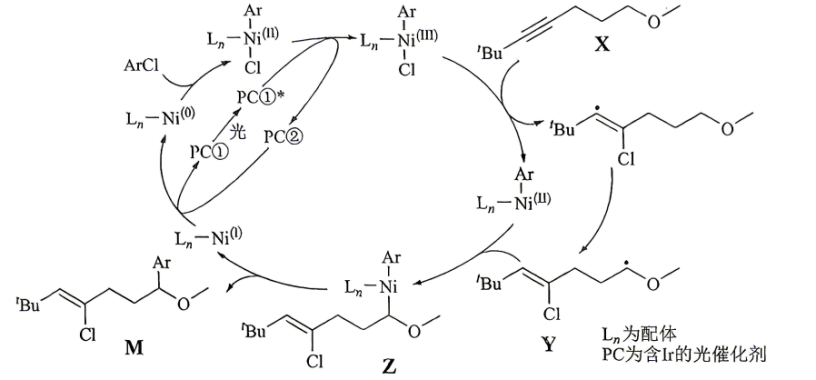
原题图所用高中知识
催化循环；氧化还原中化合价分析；化学键断裂类型。
读题与思路
追踪Ni的价态变化：Ni(0)→Ni(II)→Ni(III)→Ni(I)→…
分步解析
- X→Y：Ni(III)—Cl的Cl加到碳碳三键上（π键断裂、Ni—Cl σ键断裂），并发生1,5-氢原子转移，C—H σ键断裂，A正确。
- Y自由基与 Ar—Ni(II) 结合生成Z，Ni升高一价，Z中Ni为+3；Z再还原消除得到M和Ni(I)，B错误。
- PC②转化为PC①的同时 Ni(I) 被还原为 Ni(0)，即PC②失电子，是氧化过程，C正确。
- 整个循环的净结果为X与ArCl在光与催化剂作用下生成M，D正确。
检查与易错点
Ar—Ni(II) 与碳自由基结合是Ni的单电子氧化，生成Ni(III)。
本题来源：doc-hunan-q
返回原卷说明与一、选择题
题目与已知条件
可用CO₂氧化烷烃脱氢制取烯烃。向密闭容器中通入C₃H₈、CO₂和He（体积比为1∶1∶2），维持压强为 kPa，发生反应：。测得C₃H₈的平衡转化率与温度的关系如图中曲线①所示。下列说法错误的是
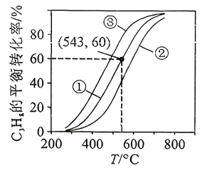
原题图B.512 ℃下，CO₂的平衡转化率为50%，则该反应的 kPa
C.543 ℃下，体系中 时，表明反应已达平衡
D.若减小通入气体中He的占比，C₃H₈的平衡转化率与温度的关系可能是曲线②
所用高中知识
温度对平衡的影响；三段式求Kp；惰性气体对平衡的影响。
读题与思路
设C₃H₈、CO₂、He分别为1、1、2 mol列三段式。
分步解析
- 升温平衡转化率增大，正反应吸热，A正确。
- 512 ℃：CO₂转化0.5 mol，平衡时C₃H₈、CO₂、C₃H₆、H₂O、CO各0.5 mol，He 2 mol，共4.5 mol，各分压均为 。
- kPa，不是 ，B错误。
- 543 ℃平衡转化率60%：n(C₃H₈)=0.4、n(C₃H₆)=0.6，恰好满足3×0.4=2×0.6，且反应前后比值随反应进行而变化，此关系成立即达平衡，C正确。
- 恒压下减少He占比相当于增大反应气体分压，平衡向气体分子数减少的方向（逆向）移动，同温下转化率降低，可能是曲线②，D正确。
检查与易错点
恒压体系中He的存在会稀释各组分分压，计算Kp时要计入总物质的量。
本题来源：doc-hunan-q
返回原卷说明与一、选择题
题目与已知条件
常温下，向10 mL Ba(OH)₂溶液中缓慢滴入0.01 mol·L⁻¹ NaHCO₃溶液，溶液的pH和pBa[pBa = −lg c(Ba²⁺)]与V(NaHCO₃)的变化关系如图所示。已知：lg 2 = 0.3。下列说法错误的是
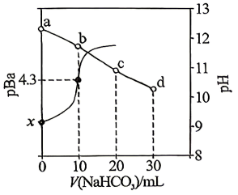
原题图B. 所用高中知识
沉淀溶解平衡；水的电离；滴定过程分析。
读题与思路
由起点pH求Ba(OH)₂浓度，再按加入量分段。
分步解析
- a点pH≈12.3，c(OH⁻)=0.02 mol·L⁻¹，c(Ba²⁺)=0.01 mol·L⁻¹，pBa=2，即x=2，A正确。
- Ba²⁺共1×10⁻⁴ mol。加10 mL时 Ba²⁺ + OH⁻ + HCO₃⁻ ══ BaCO₃↓ + H₂O 恰好完全，溶质为NaOH，c(Ba²⁺)=c(CO₃²⁻)=10⁻⁴·³=5×10⁻⁵ mol·L⁻¹，，B正确。
- 加20 mL时NaOH恰好与NaHCO₃生成Na₂CO₃（c点），碳酸根水解促进水电离且无碱抑制，水的电离程度最大；d点为Na₂CO₃与NaHCO₃混合，促进作用减弱，C正确。
- c点 c(CO₃²⁻)=10⁻⁴ mol/0.03 L≈3.3×10⁻³ mol·L⁻¹；d点稀释且部分为HCO₃⁻，c(CO₃²⁻)更小，c(Ba²⁺)更大，c(Ba²⁺)最小的是c点，D错误。
检查与易错点
图中pBa越大，c(Ba²⁺)越小；c→d曲线下降说明c(Ba²⁺)回升。
本题来源：doc-hunan-q
返回二、非选择题（58分）
题目与已知条件
氨硼烷(NH₃BH₃)是一种潜在的固体储氢材料，常温下稳定。实验室以NH₃和B₂H₆为原料制备NH₃BH₃，实验步骤：
①按图Ⅰ组装好仪器，＿＿＿＿。
②通入N₂，排尽图Ⅰ装置中的空气。
③先通入N₂和NH₃的混合气，再缓慢通入N₂和B₂H₆的混合气，反应过程中保持NH₃过量，控制温度，得到粗产品。
④纯化，得NH₃BH₃。
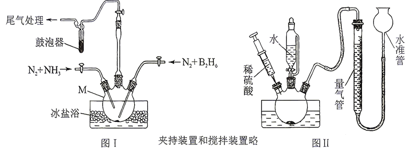
原题图
已知：①电负性：N>H>B。
②B₂H₆是一种强还原性的有毒气体，遇水剧烈反应，在空气中可自燃。
回答下列问题：
（1）图Ⅰ中仪器M的名称是＿＿＿＿。
（2）补全实验步骤①：＿＿＿＿。
（3）实验室制得的NH₃中含有水，下列试剂中可用于干燥NH₃的是＿＿＿＿(填标号)。
a．浓硫酸 b．碱石灰 c．P₂O₅
（4）实验过程中，NH₃保持过量的原因是＿＿＿＿。
（5）粗产品中可能有B₂H₆·2NH₃（结构为
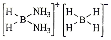
），则B₂H₆·2NH₃中含有的化学键的类型有＿＿＿＿(填标号)。
a．离子键 b．共价键 c．氢键
（6）在酸性条件下，NH₃BH₃与水反应生成H₃BO₃和H₂并放热，该反应的离子方程式为＿＿＿＿。利用图Ⅱ装置测定H₂的体积，反应结束后，下列操作会导致所测H₂体积偏大的是＿＿＿＿(填标号)。
a．读数时，气体未冷却至室温
b．读数时，水准管液面高于量气管液面
c．计算时，未减去注入硫酸的体积
（7）NH₃BH₃的晶胞如图所示，则一个晶胞中含有＿＿＿＿个氢原子。
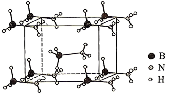
晶胞图所用高中知识
气体制备实验的基本操作；干燥剂选择；配合物中的化学键；氧化还原方程式配平；量气误差分析；晶胞均摊。
读题与思路
B₂H₆有毒、易燃、遇水反应，实验设计围绕安全与充分转化展开。
分步解析
- （1）M为三颈烧瓶。
- （2）有气体参与的实验，组装后应先检查装置的气密性。
- （3）NH₃为碱性气体，不能用浓硫酸、P₂O₅干燥，选b碱石灰。
- （4）NH₃过量可使B₂H₆充分反应，提高B₂H₆的转化率，并避免有毒、易自燃的B₂H₆逸出污染环境或引发危险。
- （5）[BH₂(NH₃)₂]⁺与[BH₄]⁻之间为离子键，离子内部为共价键（含配位键）；氢键不是化学键，选ab。
- （6）NH₃BH₃中B的H为−1价（电负性N>H>B），与H₂O中+1价H归中生成H₂：NH₃BH₃ + 3H₂O + H⁺ ══ NH₄⁺ + H₃BO₃ + 3H₂↑。
- a：未冷却，气体受热膨胀，体积偏大；b：水准管液面高，量气管内气体被压缩，体积偏小；c：注入的硫酸占据了体积，未扣除则偏大。选ac。
- （7）由图，NH₃BH₃分子位于8个顶点和体心，每个晶胞含 个分子，每个分子含6个H，共12个H原子。
答案
（1）三颈烧瓶 （2）检查装置的气密性 （3）b （4）提高B₂H₆的转化率，防止有毒的B₂H₆逸出污染环境 （5）ab （6）NH₃BH₃ + 3H₂O + H⁺ ══ NH₄⁺ + H₃BO₃ + 3H₂↑；ac （7）12
检查与易错点
氢键属于分子间作用力，不是化学键；水准管液面高于量气管时气体受压，读数偏小。
本题来源：doc-hunan-q
返回二、非选择题（58分）
题目与已知条件
一种由硫化铅精矿(含PbS及少量ZnS、CdS)制备高纯铅的工艺流程如下：
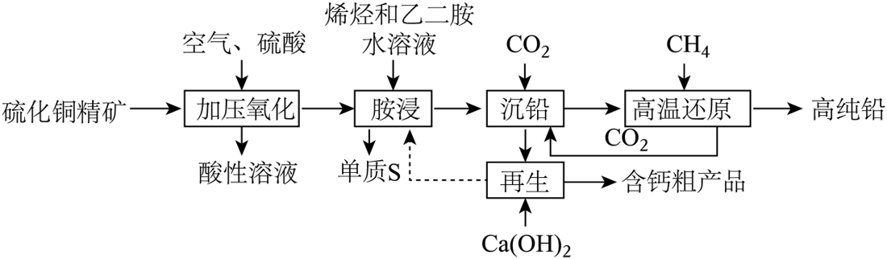
原题图
已知：①乙二胺(H₂NCH₂CH₂NH₂，简写为en)为一种二元弱碱。
②，。
③金属离子浓度不超过 mol·L⁻¹时，认为该离子已沉淀完全。
回答下列问题：
（1）Pb在元素周期表中的位置为第六周期第＿＿＿＿族。
（2）“加压氧化”中，PbS发生反应的离子方程式为＿＿＿＿；采用加压操作可提高反应速率，原因是＿＿＿＿。
（3）“酸性溶液”经处理后，Cd²⁺、Zn²⁺浓度分别为0.01 mol·L⁻¹、0.02 mol·L⁻¹，调pH使Zn²⁺恰好沉淀完全时(假设溶液体积不变)，Cd²⁺＿＿＿＿(填标号)。
a．沉淀完全 b．部分沉淀 c．未沉淀
（4）“胺浸”后，PbSO₄转化为配合物[Pb(en)₂]SO₄，“沉铅”所得固体为碱式碳酸铅[Pb₂(OH)₂CO₃]。下列说法正确的是＿＿＿＿(填标号)。
a．配合物[Pb(en)₂]SO₄中的配位原子为N
b．“沉铅”过程中，溶液pH增大
c．流程中烯烃和乙二胺得到了循环利用
（5）“高温还原”中，生成Pb的化学方程式为＿＿＿＿；若用炭代替CH₄，将导致铅纯度下降，原因是＿＿＿＿。
（6）“再生”时，得到的“含钙粗产品”的主要成分有＿＿＿＿、＿＿＿＿(写化学式)。
所用高中知识
元素周期表；氧化还原离子方程式；Ksp计算；配位化学；流程中的循环物质。
读题与思路
加压氧化：PbS被O₂氧化为单质S，Pb²⁺与硫酸根结合为难溶PbSO₄；胺浸溶出铅；沉铅通CO₂；高温用CH₄还原。
分步解析
- （1）Pb与C同主族，位于第六周期第ⅣA族。
- （2）2PbS + O₂ + 4H⁺ + 2SO₄²⁻ ══ 2PbSO₄ + 2S + 2H₂O；加压增大O₂的压强（溶解浓度），反应速率加快。
- （3）Zn²⁺恰好沉淀完全：。此时Cd²⁺的 ，已开始沉淀；剩余 mol·L⁻¹ >1.0×10⁻⁵，未沉淀完全，选b。
- （4）a：en中N原子有孤电子对，配位原子为N，正确。b：沉铅时通入CO₂（酸性氧化物），en被质子化为enH⁺/enH₂²⁺，溶液pH减小，错误。c：再生时加Ca(OH)₂释放出en，与烯烃一起（虚线）返回胺浸，烯烃与乙二胺循环利用，正确。选ac。
- （5）CH₄中C由−4升至+4，失8e⁻；Pb由+2降至0：2Pb₂(OH)₂CO₃ + CH₄ ═高温═ 4Pb + 3CO₂ + 4H₂O。炭是固体，过量的炭会混入生成的铅中，使铅纯度下降（CH₄及其产物均为气体，易与铅分离）。
- （6）再生液中含SO₄²⁻及溶解的CO₂（碳酸盐），加Ca(OH)₂得CaSO₄、CaCO₃。
答案
（1）ⅣA （2）2PbS + O₂ + 4H⁺ + 2SO₄²⁻ ══ 2PbSO₄ + 2S + 2H₂O；增大O₂的压强（浓度），加快反应速率 （3）b （4）ac （5）2Pb₂(OH)₂CO₃ + CH₄ ═高温═ 4Pb + 3CO₂ + 4H₂O；固体炭过量时会混入铅中 （6）CaSO₄；CaCO₃
检查与易错点
判断“沉淀完全”要算出剩余离子浓度与1.0×10⁻⁵比较，而不是只看是否开始沉淀。
本题来源：doc-hunan-q
返回二、非选择题（58分）
题目与已知条件
化合物G是一种用于合成生物碱类天然产物的中间体。某实验小组探究了G的合成，其合成路线如下(略去部分试剂和条件)：
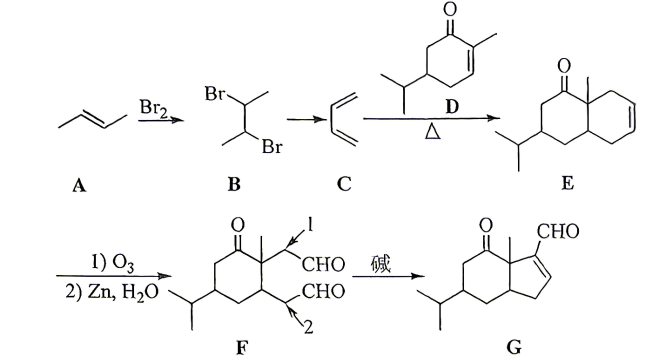
原题图
回答下列问题：
（1）A中官能团的名称为＿＿＿＿。
（2）B的核磁共振氢谱显示2组峰，峰面积之比为＿＿＿＿。
（3）B→C转化的试剂和反应条件是＿＿＿＿。
（4）C→E的反应类型为＿＿＿＿。
（5）下列有关C的说法正确的是(考虑立体异构)＿＿＿＿(填标号)。
a．分子中所有的原子可能共平面
b．与丙烯酸发生类似于C→E的反应，共得到2种产物
c．在催化剂作用下发生缩聚反应，可用于制备顺丁橡胶
d．与Br₂发生1,2-加成和1,4-加成反应，共得到2种产物
（6）F中，与1号碳相比，2号碳C—H键的极性相对＿＿＿＿(填“较大”或“较小”)。
（7）F转化为G的同时，有副产物M生成。已知M是G的同分异构体，且与G的官能团相同。M的结构简式是＿＿＿＿(F中六元环不参与反应)。
（8）已知：①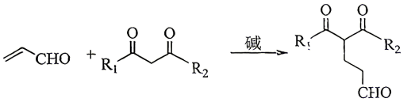
已知①
②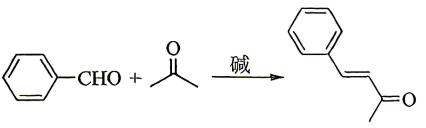
已知②
以J和L为原料合成Q的合成路线如下：
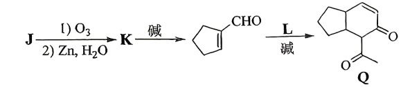
合成路线
J、L的结构简式分别是＿＿＿＿、＿＿＿＿。
所用高中知识
加成、消去、Diels–Alder反应；臭氧化；羟醛缩合；Michael加成；立体异构计数。
读题与思路
A为2-丁烯，B为2,3-二溴丁烷，C为1,3-丁二烯，C与D发生[4+2]环加成得E，E臭氧化得二醛F，F分子内羟醛缩合得G。
分步解析
- （1）A为CH₃CH=CHCH₃，官能团为碳碳双键。
- （2）B为CH₃CHBrCHBrCH₃，两种氢：6个甲基H与2个次甲基H，峰面积比3∶1。
- （3）卤代烃消去生成二烯：NaOH的乙醇溶液，加热。
- （4）C（双烯）与D（亲双烯体）发生Diels–Alder反应，属于加成反应。
- （5）a：1,3-丁二烯为平面构型（单键旋转可使所有原子共面），正确。b：与丙烯酸得环己-3-烯甲酸，含1个手性碳，有一对对映体，共2种，正确。c：制顺丁橡胶是加聚反应，不是缩聚，错误。d：1,4-加成产物有顺反2种，1,2-加成产物另计，总数超过2种，错误。选ab。
- （6）G中—CHO所连的环上碳原本与1号碳相连：成环时1号碳（与醛基相连的α-H更活泼的位置）脱氢进攻另一个醛基，说明1号碳C—H键极性较大，2号碳C—H键极性相对较小。
- （7）副产物M是2号碳失去α-H、进攻上方醛基后脱水形成的另一种五元环烯醛：
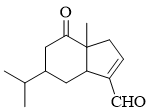
- （8）逆推：Q由环戊烯甲醛与L在碱作用下先发生已知①（Michael加成），再发生已知②（分子内羟醛缩合）生成，L为乙酰丙酮CH₃COCH₂COCH₃；环戊烯甲醛由己二醛K分子内羟醛缩合得到，K由J臭氧化得到，J为环己烯。
答案
（1）碳碳双键 （2）3∶1 （3）NaOH的乙醇溶液、加热 （4）加成反应 （5）ab （6）较小 （7） （8）J： （环己烯）；L：
（环己烯）；L：![选项图]() （CH₃COCH₂COCH₃）
（CH₃COCH₂COCH₃）
检查与易错点
Diels–Alder反应的产物若产生手性碳，“考虑立体异构”时要计入对映体。
本题来源：doc-hunan-q
返回二、非选择题（58分）
题目与已知条件
烯烃是重要的化工原料，可用CO和H₂为原料直接合成，其原理：。回答下列问题：
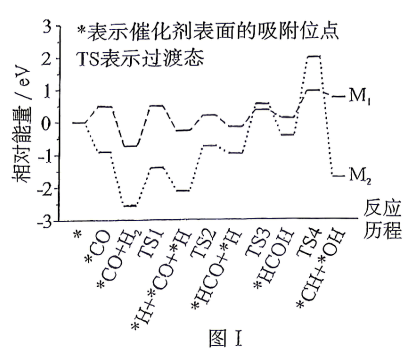
图Ⅰ
（1）该反应的关键在于CO活化路径的调控。图Ⅰ是M₁、M₂（M₁、M₂分别是Co₂C和CoMnO）两种催化剂活化CO的机理，其中催化效率较高的是＿＿＿＿(填“M₁”或“M₂”)。催化剂为M₂时，反应历程中决速步(速率最慢)的反应方程式为＿＿＿＿。
（2）恒压条件下，该反应若改用M₃（Na/FeC@Fe₃O₄）作催化剂，产物中的H₂O还可与CO反应。以生成C₃H₆为例，相关反应如下：
i．
ii．
iii．
①当 时，反应iii的 ＿＿＿＿kJ·mol⁻¹。
②已知反应的平衡常数 与温度 之间符合：（为摩尔气体常数，为常数）。当 时，反应ii和iii的 与温度 的数据如表所示，反应iii对应表中数据＿＿＿＿(填“a”或“b”)。
|
a |
6.7 |
2.9 |
1.8 |
|
b |
20.3 |
5.2 |
0.7 |
③反应近似达到平衡时，加入少量无水MgCl₂，CO的平衡转化率和CO₂的选择性均减小，其可能原因是＿＿＿＿（选择性 = 转化为目的产物所消耗CO的量 ÷ 已转化的CO总量 × 100%）。
④增大，烯烃的氢原子经济性将＿＿＿＿(填“增大”或“减小”)，理由是＿＿＿＿（氢原子经济性 = 目的产物中氢原子的总质量 ÷ 参加反应的氢原子的总质量 × 100%）。
⑤图Ⅱ为CO转化率和CO₂选择性分别与H₂/CO投料比之间的关系，H₂/CO投料比为1.5时，副产物甲烷的选择性为10%，烯烃的氢原子经济性=＿＿＿＿。
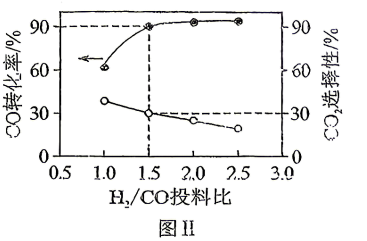
图Ⅱ所用高中知识
能量历程图与决速步；盖斯定律；范特霍夫关系；平衡移动；元素守恒计算。
读题与思路
决速步看能垒最大的一步；ΔH越负，lnK随T变化越剧烈。
分步解析
- （1）M₁历程中最大能垒较小，催化效率较高。M₂历程中 *HCOH → *CH + *OH 一步（经TS4）的能垒最大，为决速步：*HCOH ══ *CH + *OH。
- （2）①iii = i + ii： kJ·mol⁻¹。
- ②y=1时 、 kJ·mol⁻¹；|ΔH|越大，lnK随温度升高下降越快。b从20.3降到0.7、a从6.7降到1.8，反应iii对应b。
- ③无水MgCl₂吸水，体系中水蒸气浓度降低，反应ii（CO + H₂O ⇌ CO₂ + H₂）平衡逆向移动，经ii消耗的CO与生成的CO₂减少，CO转化率和CO₂选择性均减小。
- ④由iii，生成 mol C₃H₆（含2 mol H）消耗 (2−y) mol H₂（4−2y mol H），氢原子经济性 ，y增大则增大：水煤气变换参与程度增大，生成等量烯烃净消耗的H₂减少，而烯烃中的氢原子数不变。
- ⑤设CO为1 mol：转化0.9 mol，其中生成CO₂ 0.27 mol，生成CH₄ 0.09 mol，生成烯烃(CH₂)ₙ 0.54 mol C。
- O守恒：0.9 mol O中0.54 mol进入CO₂，余0.36 mol进入H₂O，H₂O为0.36 mol。
- 参加反应的H：烯烃1.08 mol + CH₄ 0.36 mol + H₂O 0.72 mol = 2.16 mol；氢原子经济性 = 1.08 / 2.16 = 50%。
答案
（1）M₁；*HCOH ══ *CH + *OH （2）①−145.2 ②b ③无水MgCl₂吸水，使水蒸气浓度降低，反应ii平衡逆向移动 ④增大；y增大，水煤气变换参与程度增大，生成等量烯烃时净消耗的H₂减少，而烯烃中氢原子数不变 ⑤50%
检查与易错点
计算氢原子经济性时，“参加反应的H”应按产物中所含的H（或净消耗H₂）计算，变换反应生成的H₂需抵扣。
本题来源：doc-hunan-q
题源与核验说明
- 2026年高考真题——化学（湖南卷） Word版无答案（网络收集版）.docx所附湖南卷无答案版（网络收集版）；SHA-256：682c0e72441c6ba9b6d04e05f3d8317880c7eef0f052663e8996c0848bf5c501
- 2026年高考真题——化学（湖南卷） Word版含解析（网络收集版）.docx所附湖南卷含解析版（网络收集版），仅作交叉核对；SHA-256：c99da595f659e8866fc0dd54122020fbe229632ef8a963136bd2e863ab1362f2
- 所附湖南卷原卷文件（网络收集版）逐题转录题干、选项、表格与图。
- 所附湖南卷含解析版（网络收集版）参考答案仅在独立推导后交叉核对。